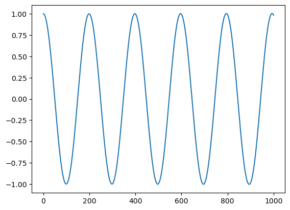
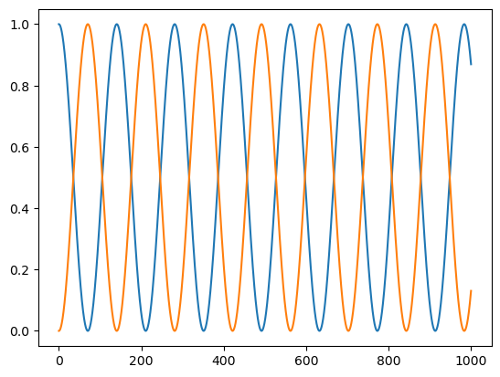

Forelesning 9: Molekyldynamikk#
Vi kan lage bindingsmodeller som enkle “fjærmodeller”. Da ser vi på atomene som kuler som henger i hver sin ende av en fjær. Dersom fjæra er stiv (høy “fjærkonstant”), vibrerer atomene mye, og motsatt. Enkle fjærkrefter følger Hooks lov:
\[F = -k\cdot (x - x_0)\]
er x er posisjonen og \(x_0\) er likevektsposisjonen, dvs. posisjonen der fjæra ikke er komprimert eller strukket ut.
import numpy as np
import matplotlib.pyplot as plt
# Startbetingelser
k = 0.001 # Bindingsstyrke (fjærstivhet)
x0 = 1
m = 1
v0 = 0
x_eq = 0
# Tidsparametre
t0 = 0
tid_slutt = 1000
dt = 1E-2
N = int((tid_slutt - t0)/dt) + 1
# Arrayer
t = np.zeros(N)
v = np.zeros(N)
x = np.zeros(N)
# Initialisering av arrayer
t[0] = t0
v[0] = v0
x[0] = x0
# Integrasjonsløkke
for i in range(N-1):
F = -k*(x[i] - x_eq) # Hookes lov
a = F/m # Newtons 2. lov
# Euler-Cromers metode
v[i+1] = v[i] + a*dt
x[i+1] = x[i] + v[i]*dt
# Oppdaterer tidssteget
t[i+1] = t[i] + dt
plt.plot(t, x)
plt.show()

# Simulerer nå to partikler som henger sammen
# Startbetingelser
k = 0.001 # Bindingsstyrke (fjærstivhet)
x0_1 = 1
x0_2 = 0
m1 = 1
m2 = 1
v0_1 = 0
v0_2 = 0
x_eq = 0
# Tidsparametre
t0 = 0
tid_slutt = 1000
dt = 1E-2
N = int((tid_slutt - t0)/dt) + 1
# Arrayer
t = np.zeros(N)
v1 = np.zeros(N)
x1 = np.zeros(N)
v2 = np.zeros(N)
x2 = np.zeros(N)
# Initialisering av arrayer
t[0] = t0
v1[0] = v0_1
x1[0] = x0_1
v2[0] = v0_2
x2[0] = x0_2
# Integrasjonsløkke
for i in range(N-1):
F = -k*((x1[i] - x2[i]) - x_eq) # Hookes lov
a1 = F/m1
a2 = -F/m2
# Euler-Cromers metode
v1[i+1] = v1[i] + a1*dt
v2[i+1] = v2[i] + a2*dt
x1[i+1] = x1[i] + v1[i+1]*dt
# Oppdaterer tidssteget
t[i+1] = t[i] + dt
plt.plot(t, x1)
plt.plot(t, x2)
plt.show()

Bruk av numeriske biblioteker#
from scipy.optimize import root_scalar
def f(x):
return x**3
def dfdx(x):
return 3*x**2
nullpunkt_halveringsmetoden = root_scalar(f, method = "bisect", bracket = [0,5])
nullpunkt_newtons = root_scalar(f, method = "newton", x0 = 10, fprime = dfdx)
nullpunkt_newtons
converged: True
flag: converged
function_calls: 98
iterations: 49
root: 2.3524928182259372e-08
method: newton
#!pip install --upgrade findiff
from scipy.misc import derivative
def f(x):
return x**3 + x**2
print(derivative(f, 1.0, dx=1e-6))
4.999999999921734
/var/folders/z_/zd2_19g1205dvcvdhgk10p680000gp/T/ipykernel_5487/643442001.py:7: DeprecationWarning: scipy.misc.derivative is deprecated in SciPy v1.10.0; and will be completely removed in SciPy v1.12.0. You may consider using findiff: https://github.com/maroba/findiff or numdifftools: https://github.com/pbrod/numdifftools
print(derivative(f, 1.0, dx=1e-6))
# Alternativ måte, siden scipy.misc.derivative skal fjernes i framtida
#!pip install numdifftools
import numdifftools as nd
fd = nd.Derivative(f) # Lager en ny funksjon for den deriverte
fd(1) # Finner den deriverte f'(1)
array(5.)
Bruk av symbolske biblioteker#
from sympy import *
x = symbols("x")
y = x**2 - 4
solve(y)
[-2, 2]
diff(x**2 - log(x**2 - 2))
\[\displaystyle 2 x - \frac{2 x}{x^{2} - 2}\]
integrate(y)
\[\displaystyle \frac{x^{3}}{3} - 4 x\]
integrate(cos(x**2), (x, -oo, oo))
\[\displaystyle \frac{\sqrt{2} \sqrt{\pi}}{2}\]
limit(cos(x)/x, x, 0)
\[\displaystyle \infty\]